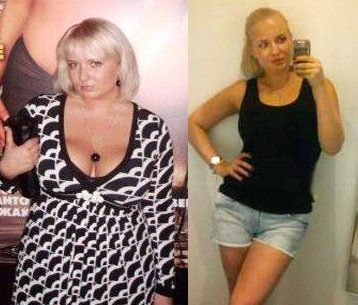
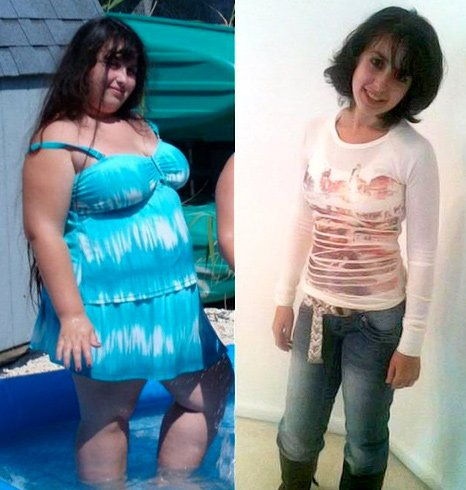
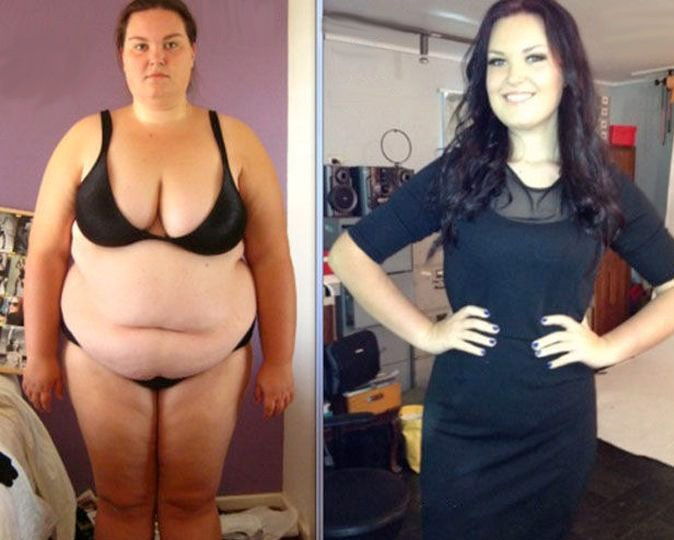
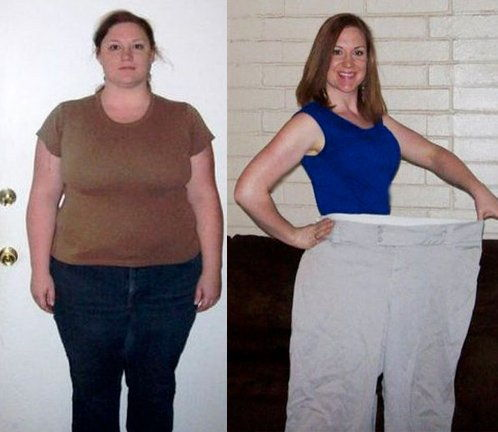

Jak, w ciągu tylko jednego miesiąca, ważąc 89 kg
schudłam do wagi 63 kg?
Co robić gdy diety i fitness nie pomagają?
Cześć wszystkim! Nazywam się Klaudia Piotrkowska, a to mój blog osobisty, na którym dzielę się z wami historią mojego szybkiego odchudzenia się :) Będę się starać odpowiadać wam wszystkim, wspierać was, ale w ostatnim czasie bardzo dużo osób do mnie pisze i nie tylko tutaj i przy takim tempie będę zmuszona żyć w Internecie :))) A tego nie chcę :))
Dlatego zdecydowałam się napisać ten artykuł i odpowiedzieć wszystkim na to palące pytanie: Jak schudłam 26kg?
Nigdy nie byłam chudziutka i zawsze chciałam być bardziej zgrabna. W rezultacie, osiągnąć to pomogły mi na bazie tybetańskich jagód i przekonanie, że bez względu na wszystko muszę osiągnąć swój cel.
Okres, w którym pozbyłam się swojej wagi to równo JEDEN MIESIĄC ! Prawda, że to po prostu NIESAMOWITY WYNIK!
Motywacja
Zawsze odczuwałam dyskomfort w moim puszystym ciele, zazdrościłam zgrabnym, podziwiałam je i chciałam być nimi. W środku zawsze czułam się chuda. Chciałabym, żeby mój przyszły mąż nosił mnie na rękach, by moje dzieci miały piękną mamę.
Jaki był tego wszystkiego rezultat? 90kg żywej wagi! Straszne! Nie mogę patrzeć na swoje stare zdjęcia! W pracy śmiali się ze mnie, a przez to jeszcze więcej przybierałam na wadze, zajadając cały swój stres. Była mi potrzebna motywacja, by zacząć chudnąć, i stało się nią negatywne doświadczenie, a dokładniej: zwolnili mnie z pracy, argumentując to tym, że nie mieszczę się w standardach tak dobrej firmy i że kompletnie nie wpisuję się w ramy zgrabnych i pięknych współpracownic z oddziału. To zabolało jak nigdy i zdecydowałam zmienić się w lepszą stronę i zmienić swoje życie.
Moja historia: jak schudłam
Na początku myślałam, że jeśli „przestanę żreć to wszystko przejdzie”, ale to nie było tak. Wydaję mi się, że próbowałam wszystkich diet świata, chodziłam do trenera osobistego. Ale to wszystko nie przynosiło sukcesu, stres, melancholia tylko pogarszały moją sytuację, waga w ogóle się nie zmniejszała! Myślałam, że może to przez wiek, mam teraz 28 lat, może już taka jestem, wiecznie gruba i taką już zostanę.
Mam przyjaciółkę, która zajmuje się importem ciuchów z Chin, a później sprzedażą ich przez Internet. Jesteśmy dla siebie bardzo bliskimi osobami i jak to przyjaciółki zawsze dzielimy się swoimi rozczarowaniami, niezbyt dobrymi wiadomościami, np. jak kolejny już raz przerwałam kolejną dietę. Któregoś razu, po jej kolejnej wizycie w Pekinie dzwoni do mnie i mówi: „Klaudia, przywiozłam Ci prezent”, ja na to: „Kaśka, boję się, że nie wejdę w twój prezent”, ona: „z nim ty wejdziesz we wszystko”. Ogólnie Kaśka mnie zaintrygowała, zaczęłam niecierpliwie czekać.
Okazało się, że Kaśka przywiozła mi opakowanie jakichś pigułek, z owocami na opakowaniu. Okazało się, że to świetny środek odchudzający, używany na Wschodzie, w Chinach i Tybecie. Teraz te pigułki szybko znikają ze sklepowych półek w Chinach – powiedziała mi przyjaciółka – ponieważ Chinkom bardzo spodobał się fast food, od którego, jak wiadomo, nie schudniesz. No więc przypomniały sobie stare metody pozbycia się zbędnych kilogramów i oczyszczania organizmu.

Sposób spożycia jest bardzo prosty: zjadasz je przed posiłkami,
czyli 2 - 3 razy dziennie.
No więc, mój wynik jest taki: zamiast 89 kg ważę 63 kg i to jeszcze nie koniec!
Ja do tej pory nie mogę uwierzyć, ale teraz wyglądam WŁAŚNIE TAK:
Żadnych diet, tortur na siłowni, rozstępów, zwisających piersi i innych „niespodzianek” po silnej utracie wagi.
Dlaczego tak szybko zrzucamy zbędne kilogramy?
Wiadomo, że pigułki to naturalny, najsilniejszy przeciwutleniacz, który przyspiesza metabolizm, delikatnie oczyszcza jelita, silnie wpływa na lipidy, dzieląc je przez co nasza tkanka tłuszczowa się zmniejsza. Oto i cały proces, to wszystko jest bardzo proste. Np. z herbatą, kawą, wodą proces pozbycia się zbędnych kilogramów trwa dużo krócej.
Najbardziej interesujące jest to, że miesiąc po tym jak schudłam znalazłam link w Internecie na te pigułki, w takim samym opakowaniu, jakie miałam ja. Ogólnie zaczęli przywozić z Chin te jagódki :))
Niedawno znalazłam sprawdzony link, nie leńcie się, zamówcie. To naprawdę jest dużo lepsze od wszelkich herbatek odchudzających, lub ścisłych diet. Osobiście testowałam! :)
Klaudia, dzięki Ci za to, że dzielisz się z innymi dziewczynami możliwością schudnięcia! Minęły już 3 tygodnie od zakończenia mojej sesji odchudzającej. Pozbyłam się zbędnych 27 kg!!! Waga się utrzymuje na 46 kg i, tak jak obiecaliście, nie zwiększa się. Dziękuję Ci bardzo!
Już od dawna marzyłam, by schudnąć... o pigułkach dowiedziałam się 3 miesiące temu, ale jakoś tak nie mogłam się zdecydować, by je zamówić. Przekonała mnie moja mama. To nie takie duże pieniądze, by spełnić swoje marzenie. Teraz chudniemy razem z mamą. A tak w ogóle, jej udaje się to lepiej niż mnie!
Jestem przeszczęśliwa, że znalazłam tę stronę, obowiązkowo zamówię te cudowne pigułki i wreszcie zacznę chudnąć!
Cześć Klaudia. Też spróbowałam tych pigułek i co teraz mogę powiedzieć – uratowałaś moją rodzinę i mój związek :)! Jesteś po prostu cudowną i czarującą dziewczyną! Mąż znów zaczął patrzeć na mnie jak na kobietę, a przez to ja czuję się dużo bardziej pewna siebie, a co najważniejsze lżejsza! :)))
Dziewczęta, szybko przyjmijcie mnie w swój krąg chudzielców! :)) Paczkę z pigułkami już otrzymałam! Dziękuję za opinie o produkcie, zmotywowały mnie, by schudnąć i wreszcie pozbyć się tych strasznych fałdek. Obiecuję opisywać swoje rezultaty!!
Cześć! Jestem dumna z was i ze wszystkich pozostałych dziewczyn, kobiet, które zaczęły się odchudzać, popieram waszą decyzję, przecież najważniejsza jest harmonia w duszy, którą można osiągnąć jedynie razem z harmonią w ciele. Opisujcie swoje wyniki. Życzę powodzenia :) Sorry, że nie odpisuję wszystkim, nie ma czasu, zdaję kolejną sesję:)! Nie obrażajcie się!
Droga Klaudio, jestem szaleńczo zadowolona, że znalazłam Twoją stronę i strasznie liczę na pomoc. Próbowałam wielu rzeczy, by pozbyć się zbędnych kilogramów, ale niestety moje rezultaty są dalekie od oczekiwań. Mój wzrost 1,62cm, a waga straszne 105kg. To po prostu osobista tragedia! Chcę schudnąć 35kg. Mam ogromną nadzieję, że z pigułkami mi się uda!
Cześć Alina! Nie tylko ja schudłam z pomocą . Niektórzy z moich znajomych i przyjaciół też niedawno zamówili kilka opakowań jagód i mogę szczerze powiedzieć, że niezadowolonych nie ma. Tak więc, jestem w 100% pewna efektywności! Mam szczerą nadzieję, że wam też się uda!!! Weźcie się w garść i działajcie!
Dziewczyny, chciałam jeszcze raz was poprosić, byście opisały swoje wyniki, kto i o ile schudł! To przecież jest bardzo ciekawe, no i pomaga innym!
Paczkę otrzymałam wczoraj. I już od dnia dzisiejszego zacznę tracić zbędne kilogramy :)) Ile można się ociągać... Ogólnie ja też chudnę! Dziękuję, Klaudia, za twoją historię i za link na stronę, na której można zrobić zamówienie. Ufff, chociaż nie trzeba jej szukać!
Klaudia, dziękuję Ci ogromnie! Zbędne kilogramy naprawdę zrzuciłam dość szyko, ale, co najważniejsze, waga się nie zwiększa! To po prostu cud, ja już poleciłam moim przyjaciółkom – jeszcze z tymi swoimi głodówkami niedługo zaczną mdleć :)
Zawsze wiedziałam, że „wszystko co nowe to tylko zapomniane stare”! :))) Jutro idę do restauracji z moim chłopakiem :) Do tego czasu sama byłam podobna do restauracji – duża i śmierdzę jedzeniem :)) A dzięki jagodom pozbyłam się 23 kg w ciągu miesiąca! Dziękuję Ci bardzo, Klaudia, jesteś po prostu cudowna!!!
Och, WOW! Maria, w ciągu miesiąca osiągnęłaś taki wynik? Chyba też zamówię sobie te pigułki. Wczoraj się ważyłam... masakra :(((((
Spróbowałam pigułek, mój wynik to -34,5 kg w ciągu 6 tygodni!!! Nigdy bym w to nie uwierzyła, gdyby nie stało się to ze mną. To naprawdę po prostu cudowne! Zjadałam pigułki przed posiłkami jak i Ty. Klaudia, dziękuję Ci za link i w ogóle za historię, jesteś boska!
Gratuluję Olga, cudowny wynik! Teraz już naprawdę, po obejrzeniu waszych fotek, wszelkie wątpliwości zniknęły!!!
No i zamówiłam 2 opakowania pigułek, dziękuję Klaudii i całej reszcie! Tak jak obiecałam, opisuję swój wynik! Sposób doskonały, w ciągu półtora miesiąca udało mi się schudnąć prawie 31 kg. HUUUURA to moje osobiste zwycięstwo!!! Jestem z siebie dumna!!!
Potwierdzam, że ten sposób jest prawdziwy. Moja przyjaciółka też schudła, używając i przyznaję, z ogromnym sukcesem – w ciągu miesiąca schudła 19kg! Bardzo imponuje!
Dziękuję bardzo wszystkim za zdjęcia, a teraz na pewno zamówię i zacznę swoją sesję odchudzającą, wszelki strach zniknął! :) I od jutra w moim życiu wszystko będzie inaczej! :))))
Sama jeszcze się nie odchudzałam z pomocą tego środka, ale trzy moje przyjaciółki schudły właśnie tak. Teraz są po prostu nie do poznania, były dziewczynami – grubaskami, a teraz prawdziwe piękności, wyglądają po prostu cudownie! Chyba też zamówię, choć mnie w zasadzie, wystarczy zrzucić około 10kg.
Klaudia, tak jak obiecałam, opisuję swój wynik. Minus 21kg w ciągu pierwszego miesiąca!!! Już czuję się jak modelka!!! Teraz cały czas mam super humor! Polecam wszystkim!
Cześć Ania! Jestem bardzo dumna z Twojego wyniku, ale jeśli mnie pamięć nie myli chciałaś ogólnie zrzucić 30 kg? Według mnie twój wynik zasługuje na pochwałę!
Cześć Klaudia! Już dawno przeczytałam Twoją historię i też postanowiłam zamówić sobie opakowanie pigułek . Dzielę się z Tobą moim sukcesem! Trzy miesiące temu moja waga sięgała 119 kg przy wzroście 160 cm. Nosiłam rozmiar 58. Teraz ważę 57 kg, niedawno kupiłam spodnie rozmiar 44. Pozbyłam się 62 kg w ciągu 3 miesięcy, ja nawet nie jestem w stanie opisać jak jestem szczęśliwa!!! Myślałam, że nigdy nie pozbędę się swoich strasznych zbędnych kilogramów! Ogromne dzięki!
WOW, jaki efekt! Mam wrażenie jakbym widziała tu dwie różne osoby. Klaudia, ja wszystko poprawnie zrozumiałam – trzeba po prostu jeść pastylkę przed posiłkiem? Żadnych diet?
Tatiana, tak wszystko dobrze zrozumiałaś. Istotą odchudzania się z pomocą pigułek nie jest głodówka, po której i tak waga wraca. Spożywając możesz zatrzymać osiągnięty wynik – stracone kilogramy nie wrócą i, co ważne, żadnego cellulitu.
SZYBKO MI GRATULUJCIE!!! W ciągu trzech i pół miesiąca schudłam 53 kg! Mąż mnie nie poznaje, ale jest zadowolony, dumny i szczęśliwy! Potwierdzam – pigułki naprawdę są unikalną i efektywną metodą odchudzającą, a na dodatek miłą :)) Zobaczcie :)))
Cześć Klaudia! Minęło 22 dni odkąd dostałam swoją paczkę z tybetańskimi . Schudłam 27,3 kg. Zaczynałam z wagą 93 kg, a teraz 65,7. Jestem bardzo zadowolona ze swojego dobrego samopoczucia, wyglądu. Wszystkim, którzy nijak nie mogą schudnąć, polecam spróbować! Jeszcze raz dziękuję!
Muszę zrzucić zbędne 14 kg. Sądząc po opiniach, uważam, że to realna szansa. Chcę zamówić i zacząć jeść pigułki, tak jak radzi Klaudia... Proszę, życzcie mi powodzenia, to naprawdę jest mi potrzebne.
Cześć wszystkim, ja również schudłam z pomocą pigułek . Jeszcze 2 lata temu przywiozła mi je z Harbin moja siostra, wtedy jeszcze nikt o nich nie słyszał... Powiem szczerze – o takim wyniku ja nawet nie marzyłam! Sama myślałam, że to wszystko jakaś bzdura i nie chciałam zacząć odchudzającej sesji, ale siostra przekonała mnie, bym spróbowała. W rezultacie, zaczęłam je spożywać w lutym, niedługo będę musiała lecieć do sklepu, żeby zmienić swoją garderobę, spodnie zaczęły spadać :)))))) Łącznie przez półtora miesiąca udało mi się schudnąć 13kg (z 67 spadłam do 54kg)!!!!!!! Teraz waga się ustabilizowała i się nie zmienia!!! Powiedzieć jedynie, że jestem szczęśliwa to za mało!! :)) Wszystkim polecam spróbować! Chociaż 2 tygodnie i sami zobaczycie efekt!
Nadia! Twój wynik jest naprawdę imponujący! Tak w ogóle, to w ciągu dwóch lat wiele się zmieniło – indywidualne podejście do problemu odchudzania się, właśnie dlatego z taką pewnością mogę je polecać. Dziewczęta, chcę przeprosić, że po prostu fizycznie nie mogę każdej z was odpowiedzieć, ale czytam wiadomości od was i bardzo się cieszę z waszych zwycięstw ze zbędnymi kilogramami!
Kiedyś, bardzo dawno temu, tak dawno, że aż myślę, że to była nieprawda, ważyłam prawie 83kg. Zamówiłam pigułki i teraz ważę niewyobrażalne 54kg! Waga się utrzymuje! Z dumą chcę pokazać wam zdjęcia – efekt mojej walki ze zbędnymi kilogramami. Nawet nie wierzyłam, że będę mogła na tyle się zmienić! Dziękuję Ci, Klaudia!
Dzień dobry, Klaudia! Chcę Pani ogromnie podziękować za pomoc okazaną dziewczętom, które chcą pozbyć się zbędnych kilogramów! Mam 33 lata, a w ostatnich latach doświadczyłam wielu trudności przez nadwagę. Miałam trudności z poruszaniem się, ciągle męczyła zadyszka, bolały mnie stawy nóg, plecy. Szybko się męczyłam, byłam senna... I zawsze wiedziałam, że wszystko to, to kara za moją otyłość! Zapoznawszy się z Pani doświadczeniem, szybko pomyślałam, by też zamówić opakowanie i spróbować. Rezultat, który osiągnęłam przekroczył wszelkie moje oczekiwania! Teraz moja waga to 62kg, a do tego czasu ważyłam 93! W ciągu trzech miesięcy zrzuciłam 31kg! Teraz wręcz dosłownie „latam na skrzydłach”, czuję w ciele taką lekkość, czuję się doskonale, jakbym była młodsza o 10 lat! Przeszła zadyszka, zakończył się ból pleców i stawów, ogólnie czuję się dużo lepiej! Z wyrazami szacunku, Olga Korzeniowska
Dzień dobry, Klaudia! Jakiś czas temu piłam chińską herbatkę odchudzającą i faktycznie pomogła mi schudnąć 5 kg, ale niestety już dosłownie za 2 tygodnie znów przybrałam na wadze. Powiedz mi, z nie będzie powtórki z historii?
Dzień dobry, Anno! Chciałabym Cię uspokoić, całe to Twoje zmartwienie jest zupełnie na marne. Zarówno szybka utrata wagi i stabilna waga w przyszłości są zasługą enzymów, które nasz organizm kontroluje. Spójrz na mnie i na resztę dziewczyn na tej stronie. A lepiej będzie jeśli sama poddasz się sesji odchudzającej, wtedy wszystkiego się dowiesz i będziesz się cieszyć z wyników. Podziel się swoim zdjęciem!